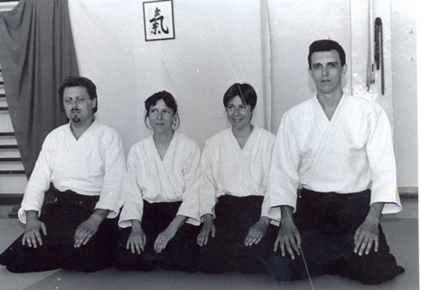

Vježbanje aikidoa započelo je u Zadru 1987. godine, kada je osnovan i prvi Ki aikido klub u Hrvatskoj. Počeci su vezani uz četvero instruktora – dva bračna para – Vesnu i Nenada Vertovšek, te Boženu i Milorada Ljubičića. Zahvaljujući prvim kontaktima i velikoj podršci slovenskih aikido majstora – instruktora Stane Kirbiša i Aleša Leskovšeka koji su dolazili u Zadar i održali više seminara, te brojnim odlascima na međunarodne seminare Sensei-ja Kenjiro Yoshigasaki-ja tadašnjim glavnim instruktorom Shin Shin Toitsu Aikidoa za Europu, zadarski Ki aikido klub je sve više dobivao na “snazi” i privlačio sve više zaljubljenika u ovu borilačku vještinu.
Uz veliku dozu entuzijazma, rada bez strunjača – tatamija, i svim mogućim ratnim nedaćama, prvi ispiti za hakame – tradicionalnu odoru, polažu se 1991. godine, a 1995. Hrvatska je dobila i prva dva majstora Ki aikidoa (N. Vertovšeka i M. Ljubičića), 1997. i trećeg (V. Vertovšek). Valja napomenuti da je 1996. godine u Zadru održan, u organizaciji Ki aikido kluba “Zadar” i prvi međunarodni Ki aikido seminar pod vodstvom Sensei-ja Yoshigasaki-ja koji je postao tradicionalan. Voditelji i instruktori bili su polaznici više desetaka domaćih i međunarodnih seminara, održavali brojne seminare u drugim gradovima i pružali potporu novim klubovima, entuzijastima i početnicima u aikidou. Ponosni su na brojne prijatelje u zemlji i inozemstvu, aikidoke i instruktore iz raznih stilova, učenike i instruktore iz drugih borilačkih vještina. U klubu trenutno vježba 30-tak stalnih članova, stalno djeluje Tai Chi Chuan sekcija, a 2002. godine prve korake učinila je i Kendo sekcija.
Osnivači Ki-aikido kluba Zadar